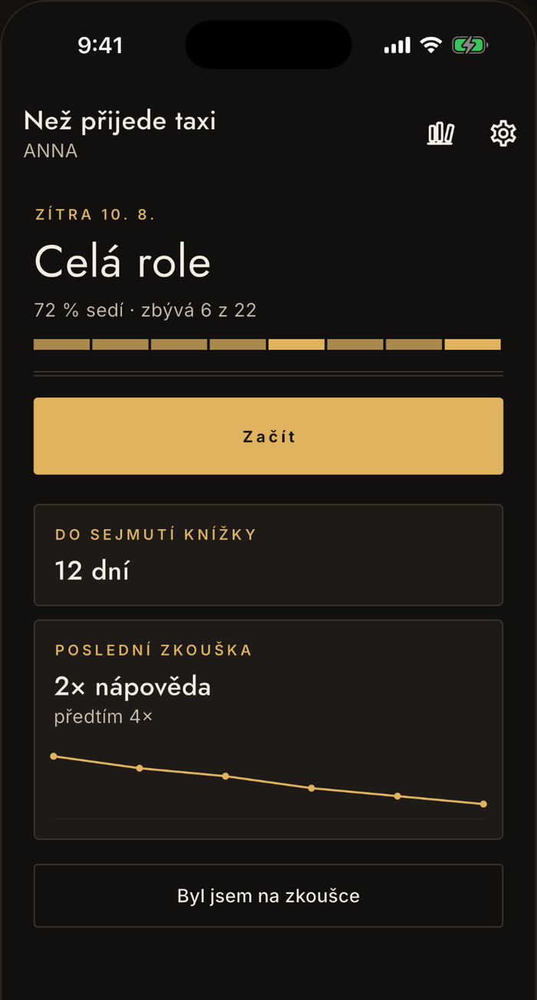
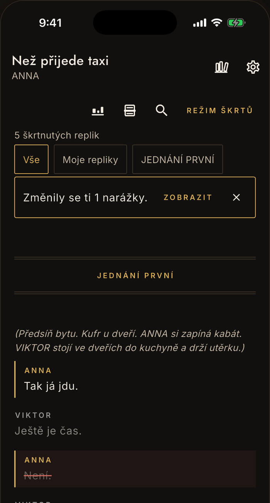
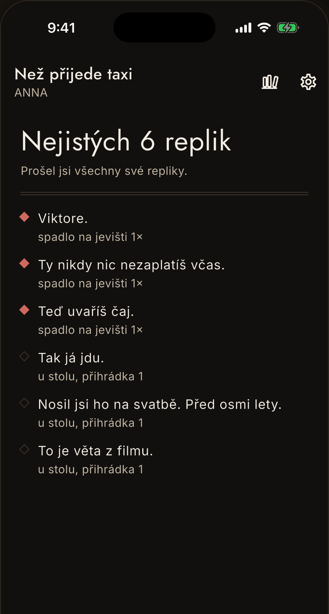
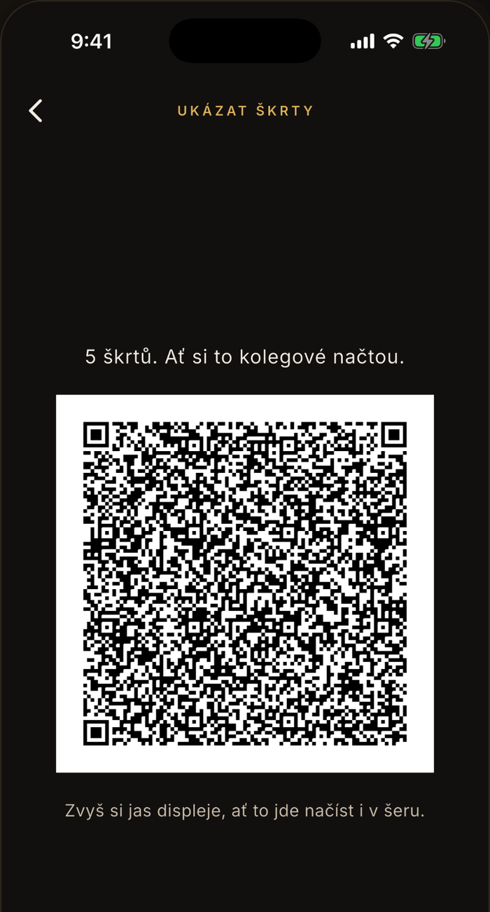

Divadlo · role · narážky
Přijdeš na zkoušku
s textem v hlavě
Naimportuješ scénář, vybereš roli a začneš. Dril tě učí narážku, ne jen slova — přesně tak, jak to přijde na zkoušce.
Import, čtečka i dril zdarma navždy. Víc rolí naráz a sdílení škrtů odemkne jednorázový nákup, bez předplatného.

Od otevření k drilu
Jak appka funguje
Čtyři kroky, žádný z nich netrvá dlouho.
Dostaň scénář do appky
Vyber soubor se scénářem, sdílej ho z mailu, nebo vlož text ze schránky. Appka ho zpracuje přímo na zařízení — nikam se neodesílá. Návod se snímky
Vyber svou roli
Appka sama pozná postavy a repliky, i časté chyby v přepisu — třeba překlep ve jméně mluvčího.
Dril tě učí narážku
Nejdřív poslední věta partnera, teprve pak tvoje replika — přesně tak, jak to přijde na jevišti.
Zapiš, co spadlo na zkoušce
Appka to zohlední v dalším drilu a ukáže, kde to ještě drhne — na skutečných číslech, ne na bodech.
Co appka umí
Čtyři obrazovky, jedna smyčka
Od dnešního úkolu po sdílení škrtů se souborem.
Domov
Co mám dnes dělat
Appka odpovídá na jednu otázku, ne na dashboard čísel. Kolik role sedí, kolik dní zbývá do sejmutí knížky a jak dopadla poslední zkouška.

Čtečka
Škrt od režiséra zapracuješ v textu
Appka zároveň spočítá, které narážky se škrtem změnily, a postrčí je v drilu nahoru — nezůstanou schované až do zkoušky.

Stav
Vidíš, co sedí. A co ještě ne.
Pokrok se ukazuje na skutečných veličinách — počet nápověd, dny do sejmutí knížky, zvládnuté výstupy. Žádné body, série ani odznaky.

Šatna
Škrty oběhnou šatnu za minutu
Kolega namíří foťák a má je zapracované. Bez serveru, bez účtů, bez posílání textu — QR kód nese jen seznam změn.
Podmínka, ne marketing
Scénář zůstane
v telefonu.
Žádný cloud, žádné účty, žádné odesílání textu. Scénáře jsou chráněná díla a často k nim patří smlouva o mlčenlivosti — proto text neopustí zařízení. Víc v zásadách ochrany osobních údajů.
Podpora
Časté otázky
Kam se ukládá můj scénář?
Jen do telefonu. Appka nemá server ani cloudové úložiště — text scénáře, poznámky, škrty i postup v učení zůstávají výhradně na vašem zařízení.
Výjimku dělá jen systémová záloha telefonu: ta zálohuje aplikace i s daty do iCloudu nebo ke Googlu, stejně jako u všeho ostatního v telefonu. Ovládáte ji vy v nastavení telefonu, ne appka. Popisuje to návod o záloze.
Jak appka pozná moje repliky?
Po vložení scénáře appka sama rozpozná postavy a repliky a upozorní na časté chyby v přepisu — třeba překlep ve jméně mluvčího nebo zdvojenou repliku. Vy jen vyberete, která role je vaše.
Jaký scénář appka zvládne přečíst?
Appka bere soubory .doc, .docx a prostý text a formát pozná podle obsahu, ne podle přípony. Jméno postavy musí být od textu oddělené — tabulátorem, několika mezerami, nebo dvojtečkou (ANNA: text). Appka si vybere tu konvenci, která ve scénáři převažuje, takže na pár řádcích, které vypadají jinak, nezáleží.
Co nestačí, je jméno oddělené jednou mezerou bez dvojtečky nebo sazba, kde jméno stojí na vlastním řádku a text pod ním. Kopie z PDF bývá slepená právě jednou mezerou — pak zkuste sehnat scénář ve Wordu, tak vám ho režisér nebo agentura nejspíš poslali.
Když se text nepodaří rozdělit, appka to řekne rovnou a scénář se nikam neuloží — nic tím nezkazíte. Postup se snímky je v návodu Jak dostat scénář do appky.
Jak funguje sdílení škrtů?
Posílá se jen seznam změn — které repliky jsou škrtnuté — nikdy text hry. Kolega si ho převezme QR kódem nebo přes schránku a zapracuje do své vlastní kopie scénáře. Než se škrty přiloží, uvidí dopředu, kolik jich v jeho kopii sedne. Podrobně to popisuje návod Sdílení škrtů se souborem.
Co je v aplikaci zdarma?
Celá cesta k naučení textu, pro jednu inscenaci a bez omezení: import scénáře všemi způsoby, oprava toho, co parser přečetl špatně, čtečka s filtry, poznámkami a štítky, škrtání včetně rozsahů, dril i přehled postupu. Zdarma je taky záloha vašich dat a odložení odehrané role do archivu.
Žádná zkušební doba a žádný limit na počet replik — useknutý scénář by nebyl malá verze, ale rozbitá.
Co odemkne plná verze?
Věci kolem zkoušení, ne učení samotné: víc rozdělaných rolí naráz a archiv odehraných; záznam po zkoušce — kde to spadlo a kolikrát vám napovídali — spolu s křivkou nápověd; výpis replik, kterým škrt změnil narážku; sdílení škrtů s celým souborem; a vyplňování karty role se seznamem spolků.
Ze záznamu po zkoušce vzniká i okamžik sejmutí knížky, takže bez plné verze se nezaznamená. Dril bez ní pracuje jen s tím, jak vám text jde u stolu — na naučení to stačí, jen o jevištních pádech neví.
Je to jednorázový nákup, žádné předplatné; cenu ukazuje obchod. A dvě věci se nezpoplatňují nikdy: oprava toho, co pokazil import, a cokoli, co chrání vaše data.
Je appka i pro Android?
Ano. Nazkoušeno je pro iOS i pro Android — je to tentýž kód a tytéž funkce na obou platformách, včetně toho, že scénář zůstává v telefonu.
Nenašli jste odpověď, nebo appka dělá něco divného?
contact@lukashula.cz